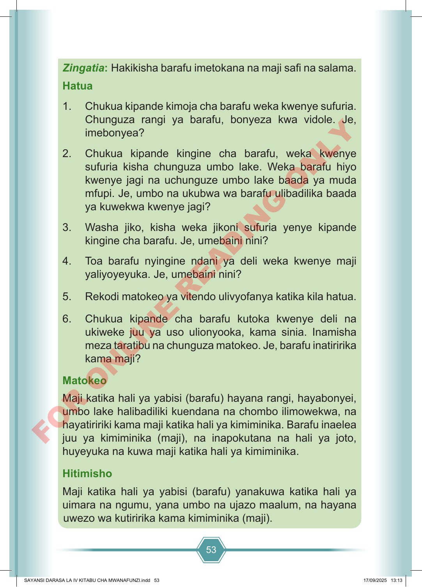

53 Zingatia: Hakikisha barafu imetokana na maji safi na salama. Hatua 1. Chukua kipande kimoja cha barafu weka kwenye sufuria. Chunguza rangi ya barafu, bonyeza kwa vidole. Je, imebonyea? 2. Chukua kipande kingine cha barafu, weka kwenye sufuria kisha chunguza umbo lake. Weka barafu hiyo kwenye jagi na uchunguze umbo lake baada ya muda mfupi. Je, umbo na ukubwa wa barafu ulibadilika baada ya kuwekwa kwenye jagi? 3. Washa jiko, kisha weka jikoni sufuria yenye kipande kingine cha barafu. Je, umebaini nini? 4. Toa barafu nyingine ndani ya deli weka kwenye maji yaliyoyeyuka. Je, umebaini nini? 5. Rekodi matokeo ya vitendo ulivyofanya katika kila hatua. 6. Chukua kipande cha barafu kutoka kwenye deli na ukiweke juu ya uso ulionyooka, kama sinia. Inamisha meza taratibu na chunguza matokeo. Je, barafu inatiririka kama maji? Matokeo Maji katika hali ya yabisi (barafu) hayana rangi, hayabonyei, umbo lake halibadiliki kuendana na chombo ilimowekwa, na hayatiririki kama maji katika hali ya kimiminika. Barafu inaelea juu ya kimiminika (maji), na inapokutana na hali ya joto, huyeyuka na kuwa maji katika hali ya kimiminika. Hitimisho Maji katika hali ya yabisi (barafu) yanakuwa katika hali ya uimara na ngumu, yana umbo na ujazo maalum, na hayana uwezo wa kutiririka kama kimiminika (maji). SAYANSI DARASA LA IV KITABU CHA MWANAFUNZI.indd 53 SAYANSI DARASA LA IV KITABU CHA MWANAFUNZI.indd 53 17/09/2025 13:13 17/09/2025 13:13 F O R O N L I N E R E A D I N G O N L Y